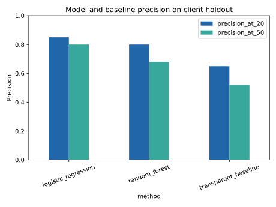

FlyRank ML Internship · Capstone Research Paper
Which visible content items should an editor review first?
Abstract
This project asks which visible content items an editor should review first when review capacity is limited. It uses 30,000 pseudonymized content items and compares a transparent baseline with logistic regression and random forest under a grouped client holdout. Logistic regression reached Precision@50 of 0.80 versus 0.52 for the baseline on the same 7,115-row holdout (base rate: 0.5165). The output is a reason-coded candidate queue for human editorial review. It is decision support, not a prediction of Google’s algorithm or evidence that editing causes recovery.
Introduction / problem statement
An editor has limited review capacity. This work ranks visible pages so review begins where the observed decline-risk proxy is strongest; false positives cost time, while false negatives delay investigation.
Data
The bundled anonymized starter slice has 30,000 content-item rows across 32 pseudonymized clients, measured over trailing 90-day aggregates. No client names, domains, URLs, titles, raw queries, or credentials are used or shown. IDs are context only for grouped validation.
Methodology
The proxy target is trend_direction == down. Trend fields are excluded from features because they define the label. The transparent baseline combines visibility, staleness, low CTR, and mid-ranking position; learned models use safe search, freshness, position, engagement, and content-context fields. The test set holds out 8 unseen clients (7,115 rows) from 24 training clients.
Results
Precision@K is primary because the output is a finite review queue. The best choice for this queue is logistic regression: its Precision@50 is highest even though random forest has marginally stronger AUC and average precision.
| Method | ROC AUC | Avg. precision | P@20 | P@50 |
|---|---|---|---|---|
| Logistic regression | 0.598 | 0.600 | 0.85 | 0.80 |
| Random forest | 0.618 | 0.609 | 0.80 | 0.68 |
| Transparent baseline | 0.506 | 0.520 | 0.65 | 0.52 |

Limitations & honest framing
This is a current-window proxy analysis, not time-forward forecasting. It cannot prove that refreshing a page causes recovery, identify Google ranking factors, or replace human editorial judgment. The full warehouse would be needed for a strict historical-feature-to-future-outcome design.
Ranked recommendations
Review the highest-scored candidates first, especially those with visible_stale_low_ctr|model_risk. Before acting, inspect relevance, accuracy, SERP context, linking, business priority, and possible measurement issues. Never auto-publish, delete pages, or change metadata based on the score alone.
Reproducibility
See the executed capstone notebook, reusable analysis helper, and metrics receipt. Install requirements.txt, then run the capstone notebook top-to-bottom. Random state: 42.